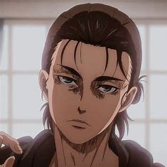
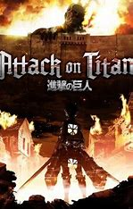
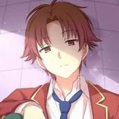
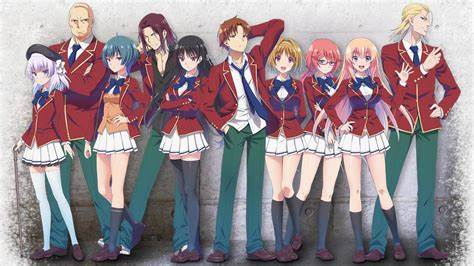
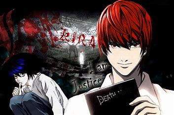

1.Shingeki no Kyojin(Attack On Titan)
Humannity has fought the monstrous beings called Titans for years. They've lived in the safety of the walls for a time, and then everything changed when the walls broke. The collosal and armored titan brought destruction upon a district and from the rubble was born humanity's hero and villain, Eren Yeager.
 2.Classroom Of The Elite
In need of a normal school life, the handsome and cunning Kiyotaka Ayanokouji enrolls in a school escaping from the clutches of his father. However, what awaits him in the school is like no other school life. Betrayal, lies, manipulation, all the things he's used to are tested in all sorts of tests and games, but all he wants is a normal lifeand little by little he's challenged and forced into the game.

3.Deathnote
Light Yagami has always seen that something was wrong with the world. Criminals flooded the world and it was revolting, but when he finds a mysterious book lying around, his days of boredom and powerlessness are over.
